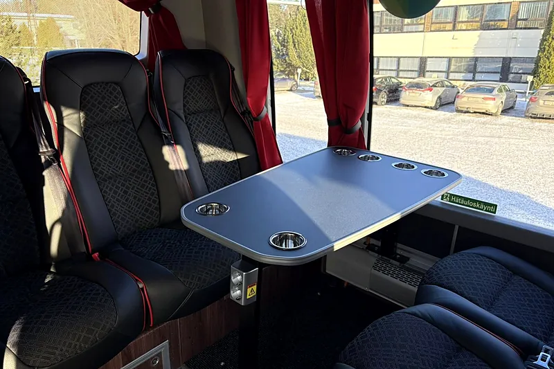

Millainen bussi on sisältä?
- 49–54-paikkainenWC · Ilmastointi · USB/220V · Pöytäryhmä · Buscafe · Turvavyöt · Wifi
Bussien varustetaso vaihtelee, varmistathan omat tarpeesi tilauksen yhteydessä.
Epävirallinen konseptidemo – ei Bus Travel Åbergin Linja Oy:n virallinen sivusto. Tiedot poimittu bustravel.fi-sivuilta 10.11.2026.

Noin 30 bussia, 9–60 paikkaa sekä kaupunkibusseja tapahtuma- ja esteettömiin kuljetuksiin. Volvon, Scanian ja Mercedeksen linja-autoja.
Tutustukaa busseihin
Volvon, Scanian ja Mercedeksen linja-autoja 9–60 matkustajalle.
13–16paikkaa
Lyhyt kuljetus pikkubussilla maksaa alle 200 euroa.
30–34paikkaa
49–54paikkaa
57–60paikkaa
Bussissa voi olla kerralla jopa 60 matkustajaa, jolloin päästöt per matkustajakilometri jäävät huomattavan pieniksi.
49paikkaa
FC Honka -teippaus ja musta-keltainen sisustus.
Bussien varustetaso vaihtelee, joten varmistakaa omat tarpeenne tilauksen yhteydessä.
Tapahtumat ja shuttlet
Kaupunkibussit soveltuvat moneen tilausajoon, esimerkiksi tapahtumakuljetuksiin, shuttlebusseiksi ja liikuntaesteisille.
Käytännössä
Kertokaa tarve tarjouspyynnössä, niin myynti valitsee sen mukaan sopivan auton.

Bussien varustetaso vaihtelee, varmistathan omat tarpeesi tilauksen yhteydessä.

Kertokaa tarjouspyynnössä, jos mukana on paljon varusteita, niin myynti valitsee auton tavaratilan mukaan.
Myynti varmistaa ennen tarjousta sopivan auton, pyörätuolipaikat ja kyytiin nousun.
Hyvä tietää
tilausajoista ajetaan Euro6-luokan dieselajoneuvoilla. Euro6 on ympäristöystävällisin EU-päästönormi.
välein sisäilma vaihtuu kokonaisuudessaan ulkoa otettavan raittiin ilman avulla.
Ilmanpuhdistin useissa turistibusseissa. Neutralisoi mikro-organismeja, bakteereja ja allergeeneja. Testattu Espanjan puolustusvoimien tutkimuslaitoksen INTA:n vaativissa testeissä.
Lähes kaikissa busseissa, kuten koulukyydeissä vaaditaan.
Sustainable Travel Finland -merkki ensimmäisenä bussiyhtiönä.
Kysymykset
Tilausajomyynti, Petri Nissinen
040-539 4976Kiireellisissä tapauksissa tilausajopäivystys 0400-505 713.
Busseissa on 9–60 paikkaa. Omalla kalustolla hoidetaan useamman sadan henkilön kuljetukset samaan aikaan, ja yhteistyökumppaneiden avulla jopa tuhansien.
Kaupunkibusseja on tapahtuma- ja esteettömiin kuljetuksiin.
Lähes kaikissa busseissa on koulukyydeissä vaadittavat alkolukot sekä turvavyöt.
Tarjouksen bussikuljetuksesta saa jopa parissa toimistotunnissa. Toimisto palvelee arkisin 8–16, ja tarjouspyynnön voi tehdä lomakkeella, sähköpostilla tai puhelimella.
Tarjous jopa parissa toimistotunnissa. Toimisto palvelee arkisin 8–16 puhelimitse ja sähköpostitse.
Tarjouspyyntö